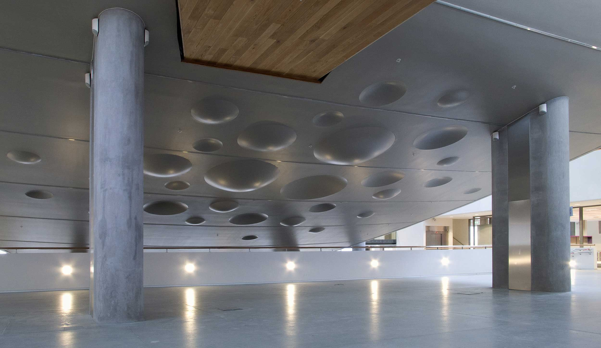

Student Centre, University of Bergen
2008
Daily Sunspot Activity
The art work is partly based on the special roof design of the Student Center. The curved roofs combined with narrow horizontal roof windows, facing south-south west, let the sun shine in during the darkest time of the year and prevent it during the hot summer months. This combined with the often rainy climate of Bergen made a good starting point for an art work celebrating the appreciated sunny days.
365 specially made small round mirrors are attached to the highest curved ceiling in a grid format. Each mirror is adjusted on its own angle. When the sun beam reaches a line of mirrors 24 light spots are projected to different sides of the lobby. When the sun is on its lowest and the light beam coming through the window on its widest it reaches four lines at a time and 96 light spots are projected around the space.
The installation is in continuous state of change. An individual light spot travels slowly across the space and finally disappears, during which process many other spots have done the same and yet other spots have appeared. The art work changes due time of the year and time of the day. The routes all light spots travel each day could, at least in theory, be calculated but the unpredictable changes of weather give a random dimension to this work. One day the work is seemingly non existent and the next day it comes out in all its glory.
These commission works are based on the winning proposal in a closed art competition organized by Public Art Norway in 2005. The mirrors were produced in Finland and installed and adjusted at site during spring 2007.
Convex-Concave
This site-specific artwork is merging into the architecture of the building. The installation is kind of illusionary landscape on the ceiling underneath the auditorium. The installation is seemingly made of same material as the auditorium. The material seems to be "taken off" for the concave shapes is in turn "added" to it for the convex ones.
The surface is illuminated mainly from one direction, by indirect lightning of the reception space on lower floor. This makes the shadows cast by convex and concave forms quite sharp. Because of these shadows it is from some directions difficult to see whether certain shape is convex or concave. This ambiguity challenges perception of the viewer.
The round parabolic forms, with diameters 600, 950, 1200 and 1800 mm, are made of thin aluminum pressed to its shape. They were fabricated in Helsinki and transported to Bergen. The realization of these installations was made in a collaboration with Lusparken arkitekter as, the designer of the building
